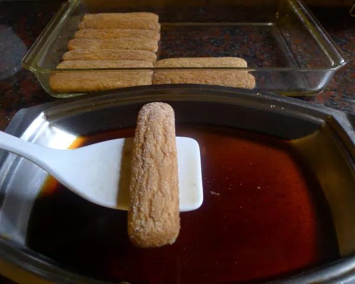
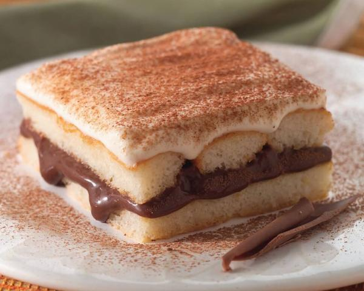

Pavê de Chocolate
O pavê é uma das sobremesas de Páscoa mais populares, por isso não é de admirar que em algumas regiões do Brasil
as famílias preparem o chamado pavê dos padres para celebrar essa ocasião.
A receita de pavê dos padres é uma das receitas de pavê mais deliciosas! Sua origem é incerta, existem registos
que relacionam este pavê a uma sobremesa que as famílias portuguesas preparavam para receber os padres durante a
visita pascal, outras que sugerem que era preparada por monges franceses na celebração da Semana Santa e da
Páscoa. Independentemente da origem, temos a certeza que este pavê especial, preparado com biscoito champanhe e
licor de cacau, não vai deixar ninguém indiferente!
Confira abaixo o passo a passo em fotos e prepare para a sua família esta receita de pavê dos padras que com
certeza todos vão querer repetir.
Lista de Ingredientes
- 1 lata de leite condensado
- ½ xícara de leite (120 mililitros)
- 1 lata de creme de leite
- 2 ovos
- ½ xícara de chocolate ou cacau em pó
- ½ xícara de água (120 mililitros)
- 4 colheres de sopa de açúcar
- 3 colheres de sopa de licor de chocolate
- 1 colher de chá de maisena (amido de milho)
- 1 pacote de biscoito champanhe (200 g)
- ½ tablete de chocolate meio amargo picado (50 g)
Modo de Preparo
- Dissolva a maisena no leite e coloque numa panela. Adicione o leite condensado, as gemas de ovo e o
chocolate ou cacau em pó e leve ao fogo médio. Fique mexendo este creme de chocolate para pavê até ficar
cremoso, desligue e reserve.
Dica: Para evitar o cheiro e gosto de ovo passe as gemas por uma peneira, de forma a filtrar a película
delas.
- À parte bata as claras em neve com a ajuda da batedeira. Sem parar de bater junte o açúcar e continue
batendo até obter um chantilly brilhante. Depois incorpore o creme de leite e misture delicadamente essa
cobertura de chantilly com um fouet ou espátula.
Dica: Um truque para que as claras batam mais rápido é adicionar nelas uma pitada de sal ou gotas de suco de
limão.
- Dissolva o licor de cacau na água e use para umedecer levemente os biscoitos. Monte o pavê dos padres
colocando metade dos biscoitos umedecidos num refratário, cubra com todo o creme de chocolate e polvilhe o
chocolate meio amargo picado.
Dica: O refratário usado deverá ser retangular, de aproximadamente 20 x 30 cm.

-
Coloque os restantes biscoitos umedecidos e espalhe a cobertura de chantilly preparada anteriormente.
Reserve na geladeira por 2-4 horas e está pronto seu delicioso pavê de chocolate e biscoito champanhe! Prove
e diga nos comentários o que você achou. Boa Páscoa!
